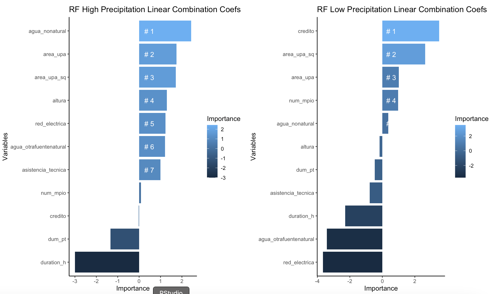

Applied Economist · Water, Climate & Food Security
Hello, I'm Anabelle. 👋
My approach is interdisciplinary at the intersection of Data Science, Earth Observations and Weather-related Disasters.
Contact: anabellecouleau@outlook.com

Hello, I'm Anabelle. 👋
My approach is interdisciplinary at the intersection of Data Science, Earth Observations and Weather-related Disasters.

I am an applied economist working as a Consultant at the Inter-American Development Bank (IDB) in the Water and Sanitation Division. My work focuses on water access and quality, infrastructure resilience, and the distributional impacts of extreme weather events and natural disasters in Latin America and the Caribbean.
I hold a Ph.D. in Agricultural and Applied Economics from the University of Illinois at Urbana-Champaign, where I specialized in agricultural price dynamics and commodity markets. My research agenda has since evolved toward the economics of hydro-climatic shocks. In particular, I examine how droughts, floods, and landslides affect access to safe water and food security for vulnerable populations in LAC, using causal identification methods and satellite data.